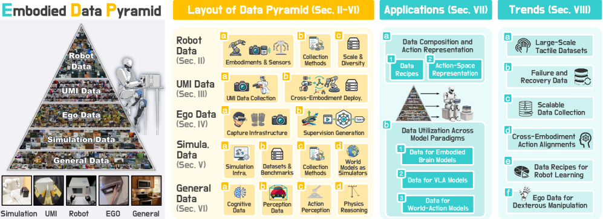
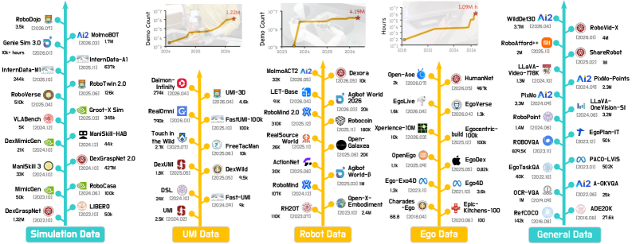

제출: 2026년 7월 27일 · Survey · 5개 데이터 layer · 6대 open challenge
한 줄 요약 (TL;DR)
Embodied manipulation의 데이터 생태계를 피라미드 5층으로 정리한 서베이. 위에서 아래로 Real-Robot → UMI-style → Ego/Exo → Simulation → General VL. 각 층을 quality · diversity · reusability · physical fidelity 4축으로 특성화하고, VLA(RT-1·OpenVLA·π0·RDT·GR00T)와 world-action model이 이 층들을 어떻게 조합해 학습하는지 data recipe 관점으로 분석. 마지막에 6개의 open challenge(tactile · failure · scalable collection · cross-embodiment · ego for dexterity · data recipes)를 제시. 최근 대부분의 대형 embodied 모델이 이 프레임으로 정리 가능.
1배경 · 문제의식
Multimodal foundation model은 인터넷 규모 데이터로 성장했지만, embodied agent는 "관측–물리 상태–행동"이 함께 커플링된 데이터가 필요하다. 그런 데이터를 만드는 방법이 여러 갈래로 갈라져 있고(실로봇 텔레옵, UMI 그리퍼, 사람 손 촬영, 시뮬 렌더링, 인터넷 영상 등) 각 갈래는 스케일 ↔ 로봇 정합성(alignment)의 트레이드오프가 다르다. 이 서베이는 각 데이터 소스가 무엇을 잘하고 무엇을 못하는지, 그리고 최근 대형 embodied 모델들이 어떻게 조합해 쓰는지를 통일된 프레임으로 정리한다.
2핵심 Contribution
Data Pyramid 분류 — 5개 층(위에서 아래): Real-Robot / UMI-Style / Ego·Exo / Simulation / General VL. 위로 갈수록 로봇 정합성↑, 아래로 갈수록 scale↑.
특히 contact-rich·dexterous 태스크에서 결정적. 최근 ViTacWorld(2607.22530)와 FM-VLA(2607.18231) 같은 방향과 정렬.
56대 Open Challenge
Tactile 데이터 — contact-rich 조작 데이터 수집.
Failure 데이터 — 회복 중심의 궤적 수집·라벨링.
Scalable Collection — 텔레옵 의존을 줄이는 인터페이스.
Cross-Embodiment Alignment — state-action 표현 표준화.
Egocentric for Dexterity — 사람 손 데이터의 로봇 활용.
Data Recipes — 어느 층을 얼마씩 섞을지 자체가 연구 문제.
6핵심 Figure / Table

Figure 1 — Data Pyramid 3부 구성. (좌) 5-층 taxonomy, (중) foundation model data recipe, (우) 향후 방향. 스케일 vs 로봇 정합성 축을 축으로 각 층의 위치를 시각화. (출처: arXiv:2607.24744)

Figure 2 — 시간별 데이터셋 스케일. 5개 층에서 모두 강한 성장. sim·general VL이 가장 가파르게 성장하고 real-robot·UMI는 완만하지만 정합성 우위. (출처: arXiv:2607.24744)
왜 유용한가 — 최근 대형 embodied 모델의 실험 세팅과 데이터 mix를 하나의 프레임으로 비교·정리하는 데 매우 유용. downstream 연구자에게 "우리 상황에는 어떤 층을 얼마씩 섞어야 하는가"라는 결정을 구조화하는 참고서.